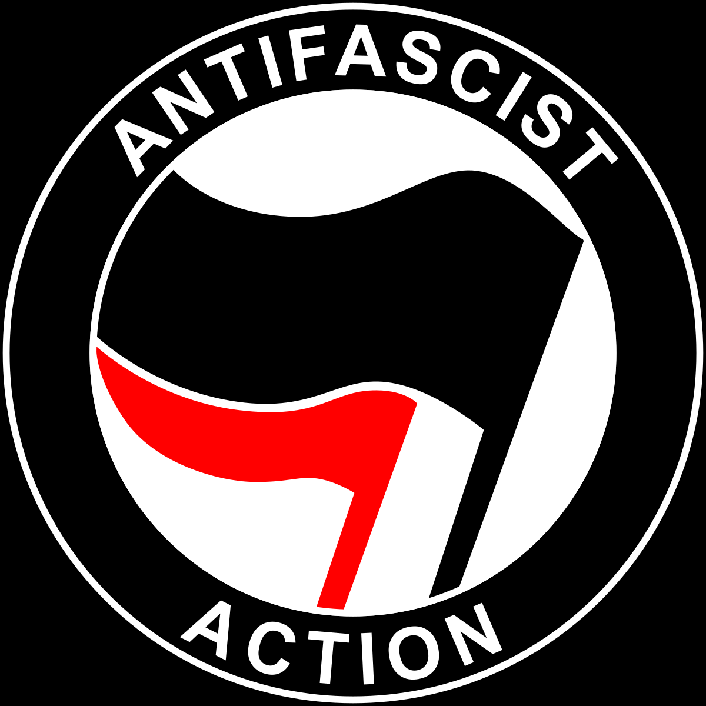

6/6/2025

Kita tahu bahwasanya pasca perang dunia pertama, Jerman dalam kekacauan hebat, inflasi tinggi, harga
meroket, rakyat jadi pengangguran, dan Perjanjian Versailles
memperdalam luka bangsa Jerman seolah
Jerman lah yang menopang semua dosa-dosa
perang dunia pertama.
Dalam masa-masa sulit seperti ini lanskap politik di Jerman amatlah terpolarisasi.
Komunisme menjanjikan pangan, lahan dan kedamaian;
sementara Nazisme menawarkan
kestabilan, identitas bangsa dan kebanggaan nasional.
29/6/2025

1. Tujuan utama dibuatnya Leninisme adalah untuk menyesuaikan tafsir komunisme nya Marx
agar sesuai dengan kondisi
semi-feodal Rusia saat itu, beliau (Lenin) berfikir bahwasanya daripada
menunggu pekerja teredukasi secara politis, lebih baik kita mendirikan
sebuah partai yang disiplin yang akan di-isikan oleh
orang-orang yang faham betul akan komunisme, dan akan
membimbing para pekerja menuju
peradaban yang komunis. Jadilah partai pelopor (vanguard party)
2. Permasalahannya adalah: dengan dibuatnya partai pelopor secara tidak langsung Lenin memecah masyarakat menjadi dua,
yaitu yang sadar secara politis dan yang belum matang secara politis